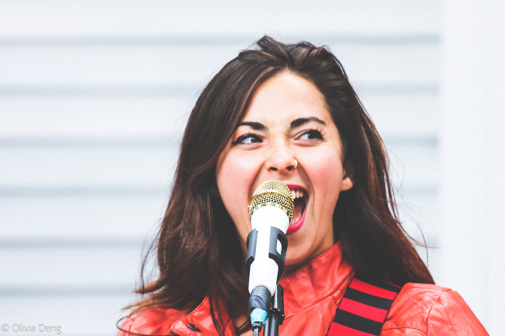
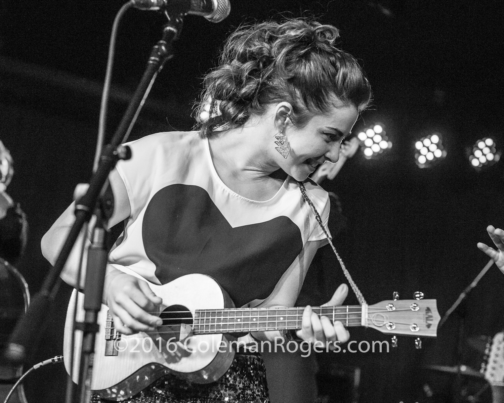
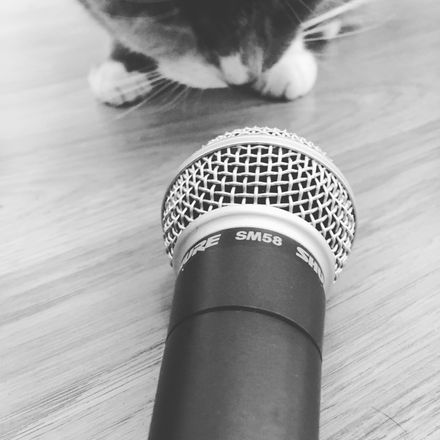
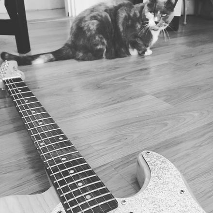
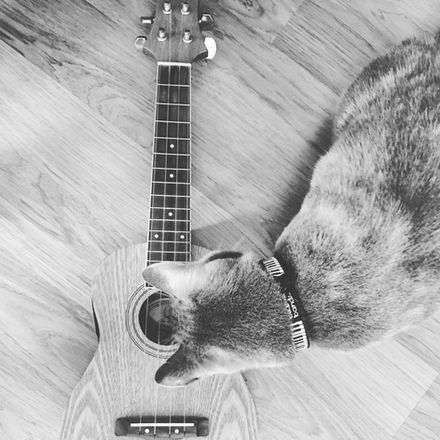
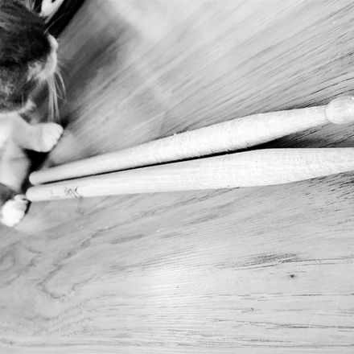
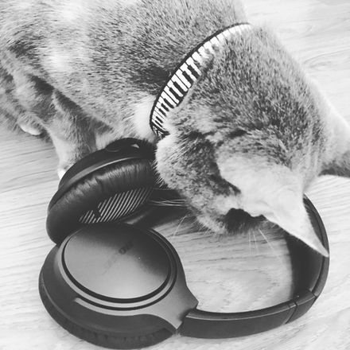
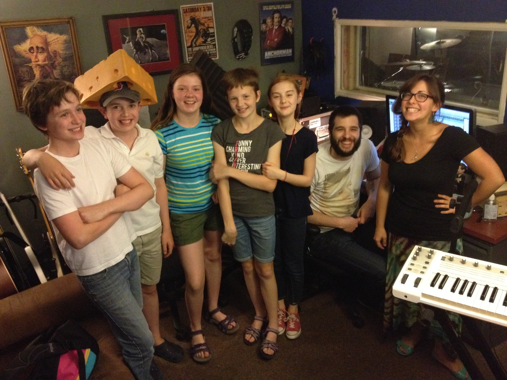

MUSICIAN
EDUCATOR
CREATOR
EVERFINER
EVERFINER is a Boston based six piece rocking thoughtful originals in overlapping genres including, shimmer-folk, shimmer-funk, indie, and pop. BIG HUGE harmonies lay on top of a tight, minimalist rhythm section, and if you're lucky a horn section will casually be lowered from the rafters.
"Shimmer Folk" is out now + available on all streaming platforms.
EVERFINER
Bio
Julie has been performing music with bands since she was 10, teaching private music lessons since she was 15, and songwriting & recording since the age of 16. Decades have come and gone, and she's still at it!
She is an award winning songwriter, has composed for off-broadway, and has performed and taught music both nationally and internationally.
As a multi-instrumentalist, Julie is able to guide her students through a one or more instruments as their interest is piqued including voice, guitar, piano, drums, ukulele, and bass. Composition, music theory, instrument-specific technique, recording skills, and repertoire are all part of the journey as well.
Lessons may take place in your home, at Julie's home-studio, or remotely online. Most importantly lessons with Julie are always fun, exciting, customized to each student's unique learning style and goals.
Annual showcases, students get to show off their skills in a safe, friendly, low-pressure environment.
PRIVATE MUSIC LESSONS

VOICE

GUITAR

UKULELE

DRUMSET

SONGWRITING + RECORDING
PIANO
Workshops
-
Strengthen skills on your instrument by playing with others! Let's create our own unique arrangement of a song that exists using harmony, our instruments, and creativity!
-
Sound Circle
Anyone can do it! Stretch the brain, listening skills, and connect to everyone around you by creating sounds using only your voice and body percussion. If you can talk, you're a singer; If you can clap, you're a drummer; If you can walk, you're a dancer!
-
Song leading
A sing along with a soft teach element

"Hi Julie,
Once more thank you for such an amazing experience for K. My husband and I were reflecting upon the way that the structure fostered both true creativity and collaboration-- the type of experience that is hard to find, but so precious for our daughter. She had tears in her eyes after the last day…
Thank you!!
-D "
PAST PROJECTS
From 2012-2021, Julie's main project was The Dirty Dottys, an award winning original pop-motown-soul ensemble. In addition to being their lead vocalist, guitarist, and uke player, Julie had the pleasure of writing original tunes and arranging unique mash-ups for this the one of a kind band. You can still find the music of this incredible force of nature on Spotify, Apple Music, Youtube, or where ever you stream.
- Winners of "Pop Act of the Year"... New England Music Awards
- Nominated for "Song of the Year"... Limelight Magazine
- Band of the Month... Deli Magazine
- Winners of "Last band Standing"... New England Music Awards
World Gone Crazy Comedy Band is a parody band with hoots and hollers galore. Julie's role in this power quartet is mainly singing and making funny faces. It is not to be missed!
“Hands down the greatest fundraiser show we’ve had. My clients LOVE the marriage of live rock & roll and stand up comedy” -Salernos Function Facility
DANCIN' RANDY'S SKA PUNK TIME MACHINE
A hand-picked a full ska orchestra made up of other former 90s ska punk kids and members of the local music scene, this ensemble covers a wide range of popular and deep cut ska songs from the 60’s to today. Whether you’re a former ska kid who wants to dance to the classics or a new fan looking for a live set of the best ska ever, get ready to hear traditional, 2Tone, and 3rd wave ska that will make you dance your face off!
Featuring several of Ghana's top drummers and dancers and some of their best students, this unique ensemble performs and teaches the traditional drumming, dancing, and songs of Ghana, West Africa across the US.